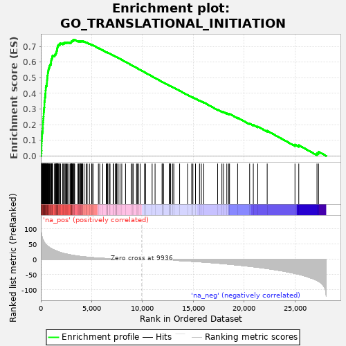
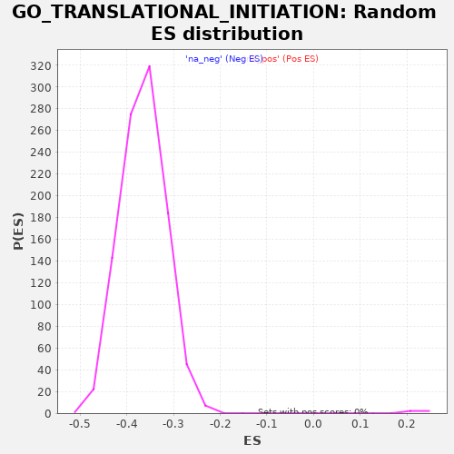

| | | Dataset | PRAD |
| Phenotype | NoPhenotypeAvailable |
| Upregulated in class | na_pos |
| GeneSet | GO_TRANSLATIONAL_INITIATION |
| Enrichment Score (ES) | 0.74274635 |
| Normalized Enrichment Score (NES) | 3.2026243 |
| Nominal p-value | 0.0 |
| FDR q-value | 0.0 |
| FWER p-Value | 0.0 |
Table: GSEA Results Summary

Fig 1: Enrichment plot: GO_TRANSLATIONAL_INITIATION
Profile of the Running ES Score & Positions of GeneSet Members on the Rank Ordered List
| PROBE | GENE SYMBOL | GENE_TITLE | RANK IN GENE LIST | RANK METRIC SCORE | RUNNING ES | CORE ENRICHMENT | | 1 | EIF3I | | | 36 | 88.955 | 0.0166 | Yes |
| 2 | RPL36 | | | 65 | 81.451 | 0.0320 | Yes |
| 3 | RPL37 | | | 74 | 79.799 | 0.0478 | Yes |
| 4 | EIF2AK1 | | | 75 | 79.666 | 0.0638 | Yes |
| 5 | RPS2 | | | 78 | 79.193 | 0.0797 | Yes |
| 6 | RPL39 | | | 81 | 78.684 | 0.0955 | Yes |
| 7 | RPL7A | | | 99 | 76.307 | 0.1102 | Yes |
| 8 | PABPC1 | | | 107 | 75.197 | 0.1251 | Yes |
| 9 | RPL29 | | | 126 | 72.900 | 0.1392 | Yes |
| 10 | RPS18 | | | 143 | 71.292 | 0.1529 | Yes |
| 11 | RPL36A | | | 197 | 65.045 | 0.1641 | Yes |
| 12 | PPP1CA | | | 200 | 64.903 | 0.1771 | Yes |
| 13 | RPL12 | | | 207 | 64.611 | 0.1899 | Yes |
| 14 | RPL35A | | | 208 | 64.592 | 0.2029 | Yes |
| 15 | RPL8 | | | 216 | 63.979 | 0.2156 | Yes |
| 16 | RPLP0 | | | 236 | 62.845 | 0.2275 | Yes |
| 17 | RPL14 | | | 242 | 62.475 | 0.2399 | Yes |
| 18 | RPL13A | | | 266 | 60.493 | 0.2513 | Yes |
| 19 | RPL24 | | | 274 | 59.799 | 0.2631 | Yes |
| 20 | RPS7 | | | 277 | 59.656 | 0.2750 | Yes |
| 21 | RPL32 | | | 288 | 58.815 | 0.2865 | Yes |
| 22 | RPL19 | | | 304 | 57.642 | 0.2976 | Yes |
| 23 | RPL27A | | | 330 | 56.666 | 0.3081 | Yes |
| 24 | RPL28 | | | 348 | 55.733 | 0.3187 | Yes |
| 25 | RPL37A | | | 350 | 55.690 | 0.3299 | Yes |
| 26 | RPL38 | | | 353 | 55.499 | 0.3410 | Yes |
| 27 | RPL3 | | | 364 | 55.106 | 0.3517 | Yes |
| 28 | RPS13 | | | 397 | 52.928 | 0.3612 | Yes |
| 29 | RPS9 | | | 398 | 52.836 | 0.3719 | Yes |
| 30 | RPS17 | | | 434 | 51.388 | 0.3809 | Yes |
| 31 | RPS4X | | | 441 | 50.900 | 0.3910 | Yes |
| 32 | EIF3M | | | 450 | 50.588 | 0.4009 | Yes |
| 33 | RPS11 | | | 468 | 50.027 | 0.4103 | Yes |
| 34 | RPS8 | | | 470 | 49.870 | 0.4203 | Yes |
| 35 | RPL15 | | | 482 | 49.245 | 0.4299 | Yes |
| 36 | RPS21 | | | 488 | 49.045 | 0.4396 | Yes |
| 37 | RPL23 | | | 511 | 48.312 | 0.4485 | Yes |
| 38 | EIF2AK4 | | | 596 | 45.614 | 0.4547 | Yes |
| 39 | RPS24 | | | 597 | 45.593 | 0.4639 | Yes |
| 40 | RPL11 | | | 602 | 45.373 | 0.4728 | Yes |
| 41 | PAIP2B | | | 613 | 45.042 | 0.4816 | Yes |
| 42 | NPM1 | | | 619 | 44.785 | 0.4904 | Yes |
| 43 | RPS29 | | | 632 | 44.391 | 0.4989 | Yes |
| 44 | EIF4E2 | | | 654 | 43.759 | 0.5070 | Yes |
| 45 | RPL31 | | | 659 | 43.742 | 0.5156 | Yes |
| 46 | EIF3CL | | | 683 | 43.042 | 0.5235 | Yes |
| 47 | RBM4 | | | 685 | 43.026 | 0.5321 | Yes |
| 48 | RPS10 | | | 725 | 41.907 | 0.5391 | Yes |
| 49 | RPL30 | | | 741 | 41.535 | 0.5470 | Yes |
| 50 | RPL4 | | | 755 | 41.110 | 0.5548 | Yes |
| 51 | RPL18 | | | 790 | 40.059 | 0.5616 | Yes |
| 52 | RPL27 | | | 836 | 39.009 | 0.5679 | Yes |
| 53 | RPLP1 | | | 853 | 38.636 | 0.5751 | Yes |
| 54 | RPS3 | | | 892 | 37.790 | 0.5813 | Yes |
| 55 | RPLP2 | | | 966 | 36.286 | 0.5860 | Yes |
| 56 | RPL10 | | | 982 | 36.075 | 0.5927 | Yes |
| 57 | RPS15 | | | 1012 | 35.553 | 0.5988 | Yes |
| 58 | RPS19 | | | 1013 | 35.524 | 0.6060 | Yes |
| 59 | RPS6 | | | 1022 | 35.333 | 0.6128 | Yes |
| 60 | RPL7 | | | 1048 | 34.879 | 0.6189 | Yes |
| 61 | RPL18A | | | 1099 | 33.886 | 0.6240 | Yes |
| 62 | RPS16 | | | 1124 | 33.427 | 0.6298 | Yes |
| 63 | UBA52 | | | 1131 | 33.233 | 0.6363 | Yes |
| 64 | EIF2A | | | 1155 | 32.804 | 0.6421 | Yes |
| 65 | RPSA | | | 1355 | 29.910 | 0.6410 | Yes |
| 66 | RPS14 | | | 1367 | 29.730 | 0.6466 | Yes |
| 67 | EIF3D | | | 1448 | 28.660 | 0.6495 | Yes |
| 68 | RPS25 | | | 1467 | 28.394 | 0.6546 | Yes |
| 69 | EIF3L | | | 1511 | 27.860 | 0.6586 | Yes |
| 70 | RPL23A | | | 1520 | 27.788 | 0.6639 | Yes |
| 71 | RPL22 | | | 1543 | 27.502 | 0.6687 | Yes |
| 72 | EIF3E | | | 1570 | 27.084 | 0.6732 | Yes |
| 73 | RPS15A | | | 1601 | 26.629 | 0.6775 | Yes |
| 74 | EIF4B | | | 1602 | 26.618 | 0.6828 | Yes |
| 75 | RPL26 | | | 1611 | 26.488 | 0.6879 | Yes |
| 76 | EIF4EBP3 | | | 1631 | 26.194 | 0.6925 | Yes |
| 77 | EIF4G1 | | | 1644 | 26.031 | 0.6973 | Yes |
| 78 | MCTS1 | | | 1686 | 25.457 | 0.7010 | Yes |
| 79 | RPL35 | | | 1691 | 25.390 | 0.7059 | Yes |
| 80 | RPL5 | | | 1726 | 25.009 | 0.7097 | Yes |
| 81 | EIF3C | | | 1849 | 23.358 | 0.7101 | Yes |
| 82 | EIF2S3 | | | 1859 | 23.307 | 0.7144 | Yes |
| 83 | RPS5 | | | 1880 | 23.053 | 0.7184 | Yes |
| 84 | RPL10A | | | 1945 | 22.442 | 0.7206 | Yes |
| 85 | DNAJC3 | | | 2158 | 20.221 | 0.7171 | Yes |
| 86 | RPS20 | | | 2183 | 20.032 | 0.7202 | Yes |
| 87 | IMPACT | | | 2290 | 19.055 | 0.7203 | Yes |
| 88 | DENR | | | 2295 | 19.016 | 0.7240 | Yes |
| 89 | EIF4A1 | | | 2398 | 18.204 | 0.7240 | Yes |
| 90 | RPS3A | | | 2475 | 17.606 | 0.7248 | Yes |
| 91 | RPL34 | | | 2552 | 17.053 | 0.7255 | Yes |
| 92 | EIF3K | | | 2636 | 16.498 | 0.7258 | Yes |
| 93 | EIF4EBP1 | | | 2780 | 15.558 | 0.7238 | Yes |
| 94 | PAIP1 | | | 2908 | 14.664 | 0.7222 | Yes |
| 95 | RPS23 | | | 2957 | 14.304 | 0.7234 | Yes |
| 96 | NCBP2 | | | 2960 | 14.290 | 0.7262 | Yes |
| 97 | EIF3H | | | 2998 | 14.061 | 0.7277 | Yes |
| 98 | POLR2D | | | 3012 | 13.955 | 0.7301 | Yes |
| 99 | EIF2S2 | | | 3037 | 13.775 | 0.7320 | Yes |
| 100 | KHDRBS1 | | | 3041 | 13.754 | 0.7346 | Yes |
| 101 | EIF6 | | | 3102 | 13.391 | 0.7352 | Yes |
| 102 | POLR2G | | | 3180 | 13.036 | 0.7350 | Yes |
| 103 | EIF1AX | | | 3183 | 13.006 | 0.7376 | Yes |
| 104 | RPS28 | | | 3188 | 12.979 | 0.7401 | Yes |
| 105 | CDC123 | | | 3193 | 12.951 | 0.7425 | Yes |
| 106 | PAIP2 | | | 3289 | 12.394 | 0.7416 | Yes |
| 107 | RPS27A | | | 3327 | 12.253 | 0.7427 | Yes |
| 108 | RPS4Y1 | | | 3650 | 10.590 | 0.7333 | No |
| 109 | COPS5 | | | 3705 | 10.373 | 0.7335 | No |
| 110 | RPS26 | | | 3788 | 9.983 | 0.7326 | No |
| 111 | EIF2AK3 | | | 3790 | 9.975 | 0.7345 | No |
| 112 | RPL17 | | | 3917 | 9.455 | 0.7319 | No |
| 113 | RPS12 | | | 3919 | 9.441 | 0.7338 | No |
| 114 | EIF3A | | | 3982 | 9.203 | 0.7334 | No |
| 115 | EIF3J | | | 4035 | 9.003 | 0.7334 | No |
| 116 | BANK1 | | | 4085 | 8.830 | 0.7334 | No |
| 117 | YTHDF2 | | | 4122 | 8.719 | 0.7338 | No |
| 118 | RPL9 | | | 4252 | 8.256 | 0.7309 | No |
| 119 | EIF2B3 | | | 4458 | 7.572 | 0.7251 | No |
| 120 | EIF3B | | | 4557 | 7.249 | 0.7230 | No |
| 121 | DAZ1 | | | 4781 | 6.511 | 0.7163 | No |
| 122 | GLE1 | | | 5003 | 5.870 | 0.7096 | No |
| 123 | MTIF2 | | | 5040 | 5.770 | 0.7094 | No |
| 124 | EIF4E | | | 5140 | 5.511 | 0.7070 | No |
| 125 | EIF2S1 | | | 5664 | 4.215 | 0.6891 | No |
| 126 | EIF3F | | | 5794 | 3.959 | 0.6853 | No |
| 127 | DDX1 | | | 6089 | 3.367 | 0.6754 | No |
| 128 | ABCE1 | | | 6435 | 2.764 | 0.6636 | No |
| 129 | EIF1AY | | | 6508 | 2.646 | 0.6616 | No |
| 130 | MTIF3 | | | 6550 | 2.583 | 0.6606 | No |
| 131 | EIF2AK2 | | | 6598 | 2.507 | 0.6594 | No |
| 132 | YTHDF3 | | | 6757 | 2.281 | 0.6542 | No |
| 133 | YTHDF1 | | | 6808 | 2.208 | 0.6529 | No |
| 134 | LARP1 | | | 7147 | 1.812 | 0.6411 | No |
| 135 | RPL13 | | | 7148 | 1.812 | 0.6415 | No |
| 136 | PPP1R15B | | | 7336 | 1.614 | 0.6351 | No |
| 137 | EIF4H | | | 7413 | 1.517 | 0.6327 | No |
| 138 | EIF1AD | | | 7442 | 1.493 | 0.6320 | No |
| 139 | EIF2D | | | 7479 | 1.451 | 0.6310 | No |
| 140 | MIF4GD | | | 7608 | 1.315 | 0.6267 | No |
| 141 | UHMK1 | | | 7787 | 1.151 | 0.6205 | No |
| 142 | CCL5 | | | 7963 | 0.996 | 0.6144 | No |
| 143 | EIF1 | | | 8334 | 0.706 | 0.6013 | No |
| 144 | NCK1 | | | 8904 | 0.371 | 0.5810 | No |
| 145 | EIF4A2 | | | 8992 | 0.332 | 0.5779 | No |
| 146 | RPS27 | | | 9102 | 0.277 | 0.5741 | No |
| 147 | MTOR | | | 9415 | 0.162 | 0.5629 | No |
| 148 | EIF4G2 | | | 9508 | 0.127 | 0.5596 | No |
| 149 | MTFMT | | | 9607 | 0.097 | 0.5562 | No |
| 150 | TPR | | | 9773 | 0.047 | 0.5502 | No |
| 151 | EIF3G | | | 10190 | -0.087 | 0.5353 | No |
| 152 | TNF | | | 10310 | -0.134 | 0.5311 | No |
| 153 | RPL21 | | | 10951 | -0.558 | 0.5083 | No |
| 154 | EIF2B4 | | | 11240 | -0.801 | 0.4981 | No |
| 155 | EIF2B2 | | | 11927 | -1.521 | 0.4738 | No |
| 156 | EIF2B1 | | | 11954 | -1.554 | 0.4732 | No |
| 157 | RPS6KB1 | | | 12073 | -1.686 | 0.4693 | No |
| 158 | DHX29 | | | 12664 | -2.449 | 0.4486 | No |
| 159 | NCBP1 | | | 12668 | -2.451 | 0.4490 | No |
| 160 | EIF4G3 | | | 12712 | -2.510 | 0.4480 | No |
| 161 | RPL41 | | | 12775 | -2.587 | 0.4463 | No |
| 162 | BOLL | | | 12982 | -2.876 | 0.4395 | No |
| 163 | DDX3X | | | 13087 | -3.037 | 0.4364 | No |
| 164 | NCK2 | | | 13654 | -3.924 | 0.4169 | No |
| 165 | PPP1R15A | | | 14436 | -5.410 | 0.3900 | No |
| 166 | DHX33 | | | 14843 | -6.256 | 0.3767 | No |
| 167 | DAZL | | | 14962 | -6.495 | 0.3737 | No |
| 168 | RPS6KB2 | | | 15217 | -7.071 | 0.3661 | No |
| 169 | ATF4 | | | 15614 | -7.983 | 0.3535 | No |
| 170 | ALKBH1 | | | 15790 | -8.359 | 0.3489 | No |
| 171 | EIF4E3 | | | 16035 | -8.896 | 0.3419 | No |
| 172 | RXRA | | | 17394 | -12.343 | 0.2957 | No |
| 173 | EIF5 | | | 17815 | -13.652 | 0.2834 | No |
| 174 | EIF5B | | | 17987 | -14.202 | 0.2801 | No |
| 175 | AGO2 | | | 18299 | -15.112 | 0.2720 | No |
| 176 | METTL3 | | | 18494 | -15.703 | 0.2682 | No |
| 177 | EIF4EBP2 | | | 18566 | -15.963 | 0.2689 | No |
| 178 | FMR1 | | | 19362 | -18.614 | 0.2441 | No |
| 179 | EIF2B5 | | | 20545 | -22.750 | 0.2063 | No |
| 180 | HSPB1 | | | 20906 | -24.076 | 0.1983 | No |
| 181 | KLHL25 | | | 21344 | -25.857 | 0.1878 | No |
| 182 | EIF1B | | | 22271 | -29.975 | 0.1607 | No |
| 183 | TICRR | | | 25005 | -46.001 | 0.0719 | No |
| 184 | HABP4 | | | 25378 | -48.943 | 0.0684 | No |
| 185 | C8orf88 | | | 27170 | -68.735 | 0.0181 | No |
| 186 | CTIF | | | 27325 | -71.416 | 0.0269 | No |
Table: GSEA details [plain text format]

Fig 2: GO_TRANSLATIONAL_INITIATION: Random ES distribution
Gene set null distribution of ES for GO_TRANSLATIONAL_INITIATION